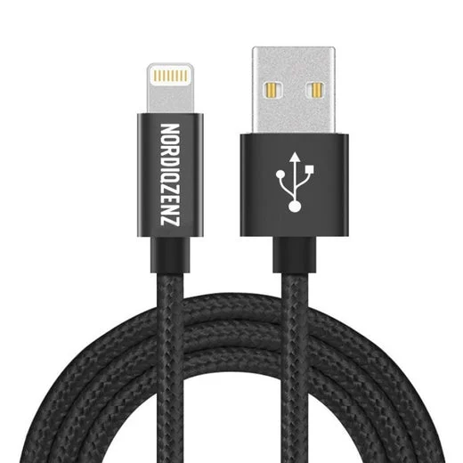
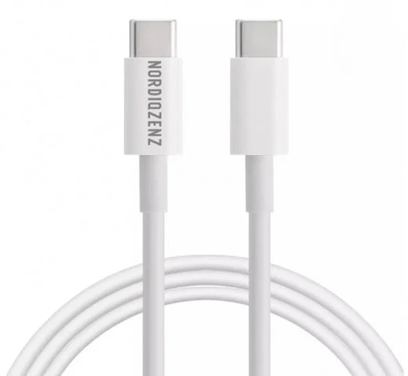
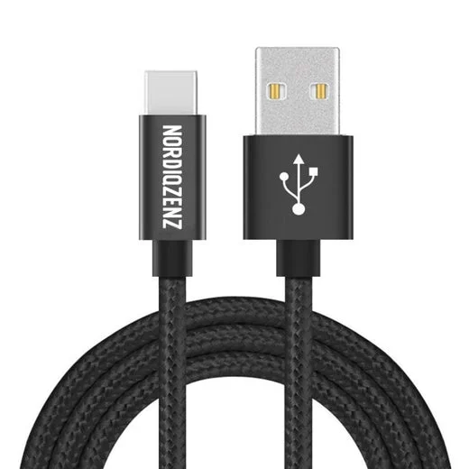
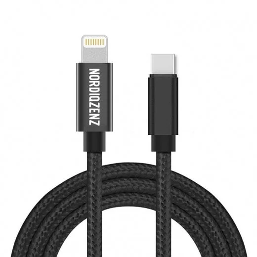
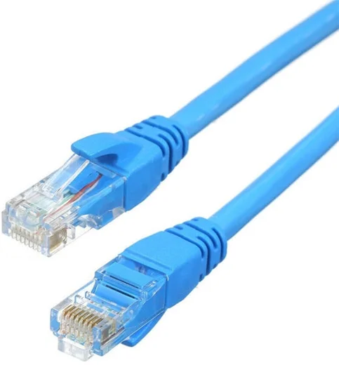
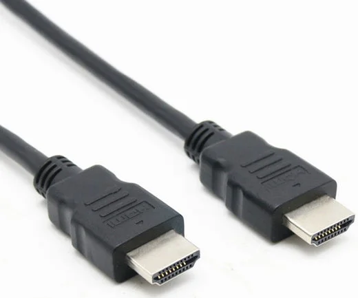
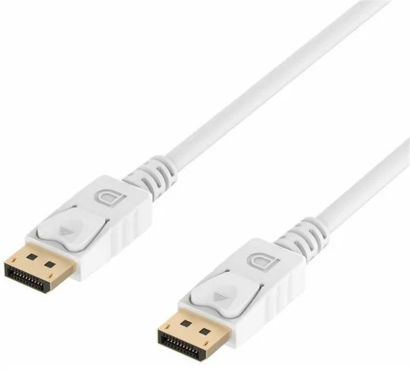
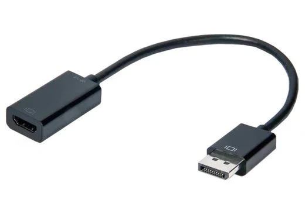
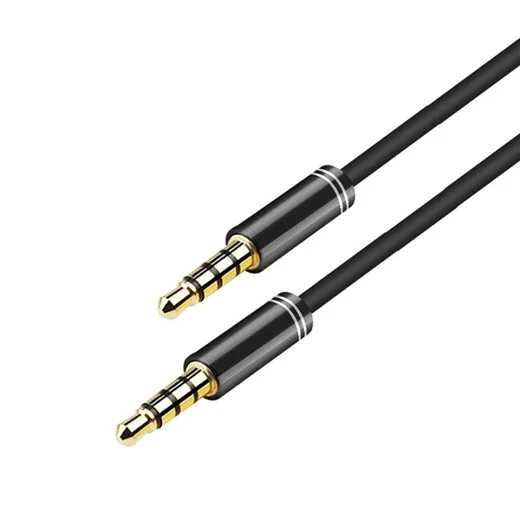
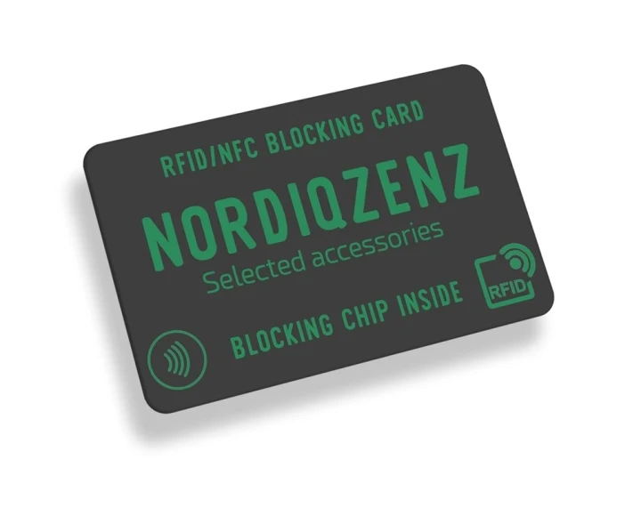

Kablar & adaptrar.
Nordiqzenz tar fram kablar och adaptrar för mobil, surfplatta, dator och nätverk.
Utforska kollektionerna ↓
USB-C till USB-C ↗Kollektioner
Smartphone CollectionLadd- och datakablar för mobil och surfplatta.
USB-A till Micro-USB
1–2 m
Textilklädda kablar samt en metallklädd variant på 1 m.
Köp hos Teknikproffset ↗
USB-A till USB-C
20 cm–2 m
Svart textilkabel för laddning och dataöverföring.
Köp hos Teknikproffset ↗
USB-C till USB-C
25 cm–3 m
60 W i vitt eller som flätad kabel. Serien omfattar även en svart 100 W-kabel på 1 m.
Köp hos Teknikproffset ↗Computer CollectionNätverk, bildskärmar och adaptrar för arbetsplatsen och hemmet.

Nätverkskablar Cat6
30 cm–15 m
Blå RJ45-kablar i flera längder, inklusive en skärmad variant på 7 m.
Köp hos Teknikproffset ↗

DisplayPort & Mini DisplayPort
1,8–3 m
Vita kablar för DisplayPort och Mini DisplayPort.
Köp hos Teknikproffset ↗
Skärmadaptrar
HDMI · DisplayPort · DVI · VGA
På bilden visas en adapter från DisplayPort (hane) till HDMI (hona).
Köp hos Teknikproffset ↗Övriga tillbehörLjudkablar och kortskydd.


RFID/NFC-blockeringskort
För plånboken
Avsett att motverka oönskad kontaktlös avläsning.
Köp hos Teknikproffset ↗En del av TP Group
Om Nordiqzenz
Vi specialiserar oss på kablar och adaptrar. Du hittar våra produkter hos Teknikproffset.
Besök TP Group ↗